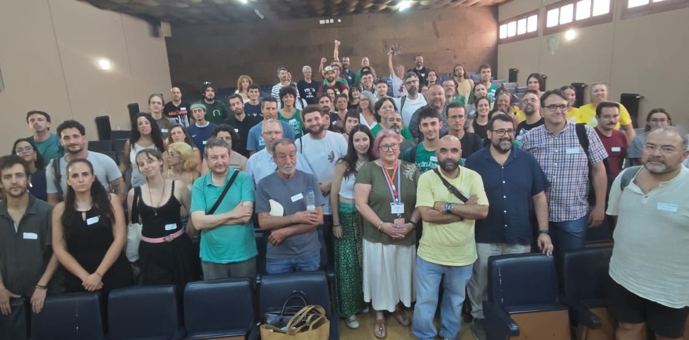
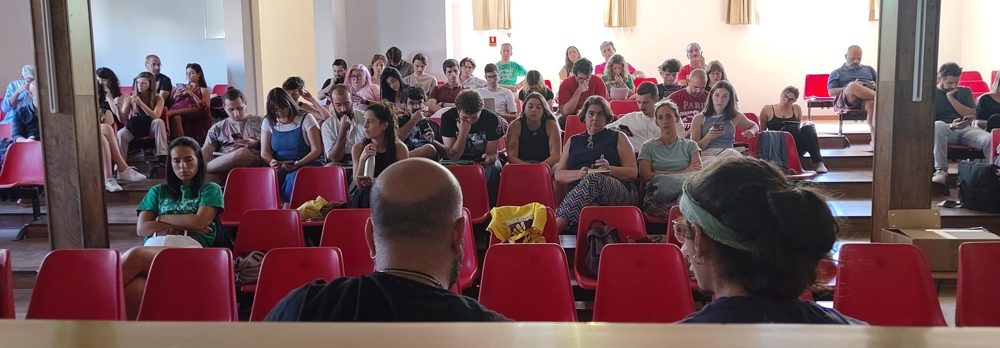

Quiénes somos
Somos una plataforma ciudadana y educativa que defiende una educación pública andaluza de calidad, inclusiva y con recursos suficientes. Estamos integrados por una amplia red de organizaciones de base del sector educativo —estudiantes, docentes, familias, trabajadores y trabajadoras—, sindicatos, colectivos sociales y organizaciones políticas comprometidas con la transformación de nuestro sistema educativo.
Nuestra fuerza reside en la diversidad de voces y la unidad de propósitos: garantizar que la educación pública sea la prioridad de la agenda política, social y económica de Andalucía.
Reivindicaciones
Nuestra lucha se articula en torno a demandas concretas para fortalecer la educación pública:
- Extensión de la educación pública a infantil de 0-3 años
- Reducción significativa de ratios en todas las etapas educativas
- Atención real a la diversidad e inclusión educativa
- Estabilización del personal interino en abuso de temporalidad
- Defensa de la formación profesional pública
- Cobertura de todas las vacantes en puestos no docentes
- Desburocratización de la educación
- Mejora de infraestructuras y adaptación climática
- Servicios complementarios y apoyo a las familias
- Educación pública plurilingüe de calidad
- Universidad 100% pública con financiación suficiente
- Dignificación profesional y mejora de condiciones laborales
- Fin de los conciertos educativos
Documentos
Materiales de trabajo de la Asamblea Andaluza por la Educación Pública:
- Manifiesto - Posicionamiento público de la plataforma
- Decálogo de reivindicaciones - Propuesta detallada de demandas
- Tabla de reivindicaciones - Síntesis de las demandas principales
Acciones
Asambleas Presenciales
I Asamblea Andaluza por la Educación Pública
Antequera, 18 de Julio de 2026
Primer encuentro de la plataforma para la coordinación y definición de estrategias de lucha.

II Asamblea Andaluza por la Educación Pública
Villanueva del Rosario, 26 de Septiembre de 2026
Segunda jornada de encuentro y coordinación de las organizaciones de la plataforma.

Asambleas Online
Asamblea online de coordinación (8 de Junio 2026)
Encuentro virtual de coordinación entre representantes de organizaciones para:
- Presentación de la plataforma y objetivos
- Definición de comisiones de trabajo (Comunicación, Logística, Cuidados y Seguridad)
- Intercambio de experiencias de otros territorios (Cataluña, Valencia, Madrid)
- Preparación de encuentros presenciales
Participa
Súmate a la plataforma difundiendo nuestras acciones y colaborando en las iniciativas que iremos organizando.
Canales de comunicación
- Canal de difusión WhatsApp - Recibe las últimas noticias y convocatorias
- Comunidad WhatsApp - Participa en la conversación colectiva
- Instagram @asambleaandedupublica - Síguenos en redes sociales
- Email: alahuelgaeducativaenandalucia@gmail.com